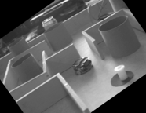
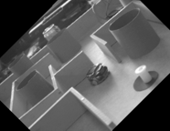
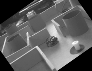
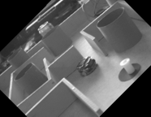

Image correspondence by cross-correlation demonstration
David Young
Demonstrates image matching using a straightforward correlational method. Correspondences can be regarded as measures of optical flow or stereo disparity, and can be used for image registration.
Contents
Setting up test images
We read in two test images. These should be in the current directory.
The camera moved sideways between capturing these two images.
% Convert to double for later processing. It's convenient to scale into the % range 0 to 1 for imshow. % *** Remove this line and change directory for the public version image1 = double(imread('MathWorksSubmissions/correlCorresp/maze1.png'))/256; image2 = double(imread('MathWorksSubmissions/correlCorresp/maze2.png'))/256; figure; imshow(image1); figure; imshow(image2);
Finding matches using default settings
We assign the two images to the object at this point, and set up progress reporting, but let the other parameters default. We print the object to see the parameters and their values.
cc = correlCorresp('image1', image1, 'image2', image2, 'printProgress', 100); disp(cc);
correlCorresp
Properties:
featurePatchSize: 5
relThresh: 0.0500
searchPatchSize: 41
searchBox: [-100 100 -100 100]
convTol: 0.1000
doCheck: 1
matchTol: 2
printProgress: 100
setFeatures: 'auto'
advanceFeatures: 0
image1: [287x372 double]
image2: [287x372 double]
We compute and display the correspondences.
The display function shows the correspondences as a set of optic flow vectors, superimposed on one image. The circles mark the feature positions in image1 and the lines point to the corresponding positions in image2.
We observe a smooth flow field, showing that the matches are likely to be correct.
cc = cc.findCorresps; correspDisplay(cc.corresps, image1);
Forward matches: Matching 314 features Done 100 tests Done 200 tests Done 300 tests Reverse matches: Matching 314 features Done 100 tests Done 200 tests Done 300 tests 212 consistent matches, no match for 102 features
We check whether the estimated matches register the images.
We can see whether the matches that have been found map the first image onto the second, by displaying edges. Here, the green edges are the original first image, the blue edges are the second image, and the red edges are the first image after warping by a perspective transformation that has been fitted to the match vectors.
If the process has worked correctly, the red and blue edges should be close together. We do not expect exact overlap because the projective transformation flow can only be an approximate, smooth, model of the true motion. Nonetheless, because the objects pictured lie close to a plane, we see a fairly good match.
correspEdgeDisplay(cc.corresps, 'projective', image1, image2);

Stereo matching
If the images had come from exactly aligned cameras, or the images had been rectified, the features in each match would have been on the same row. If this was the case, we would not want the search area to extend vertically.
We can apply this constraint to the two test images, even though they are not exactly aligned. We do this by restricting the search box in the y direction. In addition, for aligned cameras, all the offsets would be in the negative x direction, so we don't search for positive x offsets.
We see that fewer matches are found, and of course they are all horizontal, but the search is very much faster. The artificial constraint means that some matches are less accurate.
cc.searchBox = [-100 0 0 0]; cc.printProgress = 1000; % Just print start and end statistics cc = cc.findCorresps; % Refresh the results correspDisplay(cc.corresps, image1); cc.searchBox = [-100 100 -100 100]; % restore the default setting
Forward matches: Matching 314 features Reverse matches: Matching 314 features 186 consistent matches, no match for 128 features
Testing the effect of the backward match check
By default, each match is checked for consistency by performing the search in the opposite direction, starting from the feature found in image2. We can switch this behaviour off, and see the effect. Note that the large 2D search box was restored at the end of the last section.
Now every feature is matched, but some of the matches are incorrect, as the display shows.
cc.doCheck = false; cc = cc.findCorresps; % Refresh the results correspDisplay(cc.corresps, image1); cc.doCheck = true; % restore checking
Matching 314 features
Testing the effect of the convolution tolerance parameter
The cross-correlation computation uses convolve2, which can be speeded up by setting a tolerance which allows an approximation to the patch from image1 to be used instead of the patch itself. A small tolerance should produce higher accuracy but be slower; a large tolerance lower accuracy but faster.
We do not know the "ground truth" for the flow vectors, so here we use the percentage of matches confirmed by the backward match check as a proxy for accuracy.
The results show the expected trade-off. A value of 0.1 for the tolerance gives a big increase in speed for a modest decrease in accuracy for these particular images with this particular search patch size.
cc.printProgress = 0; % don't print progress for tol = 0:0.05:0.5 cc.convTol = tol; t = cputime; cc = cc.findCorresps; t = cputime - t; % estimate time taken p = round(100*size(cc.corresps,2)/size(cc.features,2)); fprintf('Tolerance: %5.2f, time: %5.1f, percent OK: %d\n', tol, t, p); end cc.convTol = 0.1; % reset to a good value
Tolerance: 0.00, time: 24.0, percent OK: 82 Tolerance: 0.05, time: 9.1, percent OK: 79 Tolerance: 0.10, time: 7.3, percent OK: 68 Tolerance: 0.15, time: 6.6, percent OK: 58 Tolerance: 0.20, time: 5.8, percent OK: 52 Tolerance: 0.25, time: 5.6, percent OK: 46 Tolerance: 0.30, time: 5.0, percent OK: 42 Tolerance: 0.35, time: 4.8, percent OK: 35 Tolerance: 0.40, time: 4.4, percent OK: 25 Tolerance: 0.45, time: 3.9, percent OK: 18 Tolerance: 0.50, time: 3.8, percent OK: 16
Feature tracking through an image sequence
The correlCorresp class facilitates feature tracking through multiple images.
In order to test this, it is easiest to synthesise an image sequence. We do this here by rotating one of the images through successive angles. The features will thus move in circles.
We make a cell array of images, and display them as they are generated.
figure; nims = 10; % ten images in the sequence angle = 5; % 5 degree rotation per frame images = cell(1, nims); % preallocate images array for k = 1:nims images{k} = imrotate(image1, (k-1)*angle, 'bilinear', 'crop'); imshow(imresize(images{k}, 0.5)); snapnow; end
  
  We can now find the correspondences for each pair. We make use of the advance method to avoid recomputing the feature positions on each frame; the positions of matches in image2 become the new feature positions in image1 for the next iteration. Other intermediate computations (the standard deviation arrays for the normalisation) are also carried forward rather than recomputed.
Features are lost as the computation progresses and they cannot be tracked further. The feature set could be reinitialised if required at any point, or additional features added in.
We also raise the threshold for feature detection to make the results display clearer, and we make the reverse match check stricter to help reduce the number of bad matches.
corrs = cell(1, nims); % preallocate correlations matrix cc.printProgress = 1000; % print number of matches only cc.relThresh = 0.2; % reduce number of features by raising threshold cc.matchTol = 1; % make the reverse check stricter cc.advanceFeatures = true; % propagate feature positions forward in time for k = 2:nims cc.image2 = images{k}; % set image2 - image1 is set in previous cycle cc = cc.findCorresps; % computation for this pair of images corrs{k} = cc.corresps; % save the results cc = cc.advance; % advance to the next frame: image2 -> image1 end
Forward matches: Matching 180 features Reverse matches: Matching 180 features 103 consistent matches, no match for 77 features Forward matches: Matching 103 features Reverse matches: Matching 103 features 89 consistent matches, no match for 14 features Forward matches: Matching 89 features Reverse matches: Matching 89 features 79 consistent matches, no match for 10 features Forward matches: Matching 79 features Reverse matches: Matching 79 features 73 consistent matches, no match for 6 features Forward matches: Matching 73 features Reverse matches: Matching 73 features 62 consistent matches, no match for 11 features Forward matches: Matching 62 features Reverse matches: Matching 62 features 57 consistent matches, no match for 5 features Forward matches: Matching 57 features Reverse matches: Matching 57 features 55 consistent matches, no match for 2 features Forward matches: Matching 55 features Reverse matches: Matching 55 features 50 consistent matches, no match for 5 features Forward matches: Matching 50 features Reverse matches: Matching 50 features 44 consistent matches, no match for 6 features
We inspect the results of the computation by displaying the 9 sets of matches in the same plot. The vectors join up in continuous tracks because each frame starts from the set of positions found at the end of the previous frame.
All the vectors should lie on circles, but we see that in a few places the tracking has not been accurate. The errors are probably due to the fact that the correlational matching method is not robust against rotation: it assumes that matches are related by a pure translation. Thus a false match may be found on an edge whose orientation has rotated to match the original feature.
figure; for k = 2:nims correspDisplay(corrs{k}, size(image1)); end
These results can be contrasted with the effect of resetting the feature set on each iteration.
The number of features can now increase or decrease on each iteration.
cc.image1 = image1; % restart from the beginning cc.advanceFeatures = false; % recompute features on each frame for k = 2:nims cc.image2 = images{k}; cc = cc.findCorresps; corrs{k} = cc.corresps; cc = cc.advance; end
Forward matches: Matching 180 features Reverse matches: Matching 180 features 103 consistent matches, no match for 77 features Forward matches: Matching 110 features Reverse matches: Matching 110 features 63 consistent matches, no match for 47 features Forward matches: Matching 144 features Reverse matches: Matching 144 features 84 consistent matches, no match for 60 features Forward matches: Matching 164 features Reverse matches: Matching 164 features 102 consistent matches, no match for 62 features Forward matches: Matching 193 features Reverse matches: Matching 193 features 120 consistent matches, no match for 73 features Forward matches: Matching 216 features Reverse matches: Matching 216 features 133 consistent matches, no match for 83 features Forward matches: Matching 228 features Reverse matches: Matching 228 features 128 consistent matches, no match for 100 features Forward matches: Matching 196 features Reverse matches: Matching 196 features 110 consistent matches, no match for 86 features Forward matches: Matching 148 features Reverse matches: Matching 148 features 85 consistent matches, no match for 63 features
The results show more new tracks starting, and some additional errors. It is possible to weed out some errors using additional criteria, such as flow smoothness, and also to make tracking more robust using techniques such as the Kalman filter. These are additional projects that could be built using this demonstration as a starting point.
figure; for k = 2:nims correspDisplay(corrs{k}, size(image1)); end
Final note
This demonstration has not exercised several of the class's parameters. For any data, the optimal settings of these should be found by experiment. It is possible to find a quantitative measure of the match quality by using synthetic sequences of the type shown above, where the ground truth is known.
Many other approaches to the image correspondence problem are possible: this is one of the simplest. For example, features that are robust against various transformations can be found and matched for images from very different viewpoints; at the other extreme, parametric optic flow models can be fitted to spatial and temporal image gradients, offering high speed for images from close viewpoints. Finding correspondences remains a very active area of research.
Copyright David Young 2010